map_iris<-readRDS("carto/iris/94/map_iris_hlm.RDS")
map_com <-readRDS("carto/iris/94/map_com_hlm.RDS")CARTO-mapsf
Le package map_sf
Le package mapsf permet de réaliser des cartes statiques de très haute qualité. Il a en effet été mis au point par des cartographes et des géomaticiens professionnels de l’UMS RIATE. Il prend la suite du package cartography dont la maintenance demeurera assuré quelque temps encore mais ne fera plus l’objet de développements futurs. Le package mapsf présente l’avantage d’être totalement compatibvle avec le package sf ce qui n’était pas autant le cas pour le package cartography, plus ancien, et créé pour être compatible avec l’ancien package sp.
On trouvera la documentation du package mapsf à l’adresse suivante :
https://riatelab.github.io/mapsf/index.html
Création d’un template cartographique
Nous allons dans un premier temps apprendre à créer un fonds de carte vierge mais comportant tout l’habillage nécessaire (“template”). Pour cela nous allons charger différentes couches cartographiques correspondant respectivement au département, aux communes et aux iris :
tracé d’un fonds de carte vierge
mf_map(map_iris, type = "base")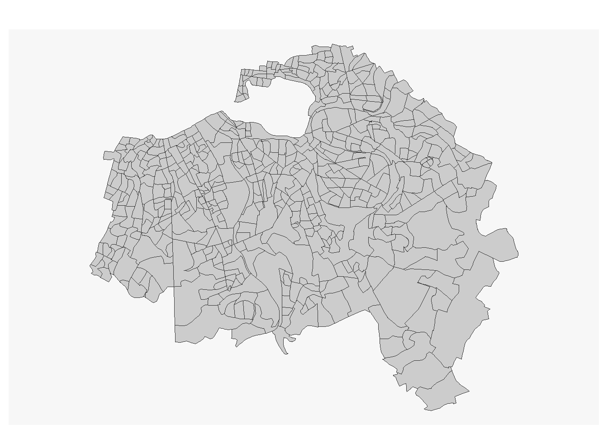
Superposition de couches
On peut toutefois ajouter toute une série de paramètres supplémentaire (col=, border=, lwd=, …) et superposer plusieurs fonds de carte avec le paramètre add = TRUE. L’ajout de la fonction layout permet de rajouter un cadre une légende.
# Trace les Iris avec des paramètres
mf_map(map_iris, type = "base",
col = "lightyellow", border="gray80",lwd=0.3)
# Ajoute les contours des communes
mf_map(map_com, type = "base",
col = NA,border="red",lwd=1,
add = TRUE)
# Ajoute un cadre, un titre et des sources
mf_layout(title = "Val de Marne",
credits = "Sources : IGN et INSEE")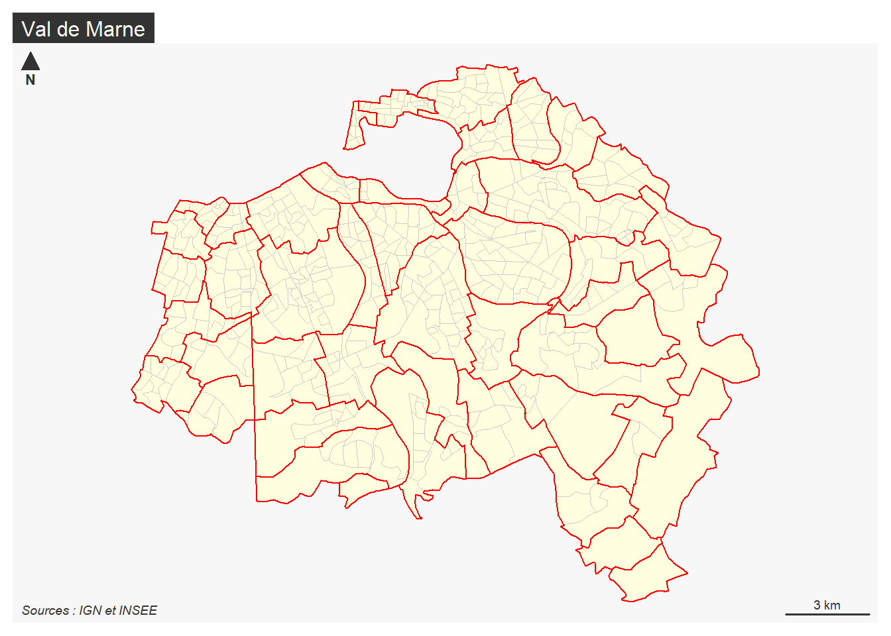
Ajout d’un thème
On peut finalement modifier l’ensemble de la carte en lui ajoutant une instruction mf_theme() qui peut reprendre des styles existants ( “default”, “brutal”, “ink”, “dark”, “agolalight”, “candy”, “darkula”, “iceberg”, “green”, “nevermind”, “jsk”, “barcelona”) mais aussi créer ses propres thèmes
#Choix du thème
mf_theme("dark")
mf_map(map_iris, type = "base",
col = "lightyellow", border="gray80",lwd=0.3)
mf_map(map_com, type = "base",
col = NA,border="red",lwd=1,
add = TRUE)
mf_layout(title = "Theme dark",
credits = "Sources : IGN et INSEE")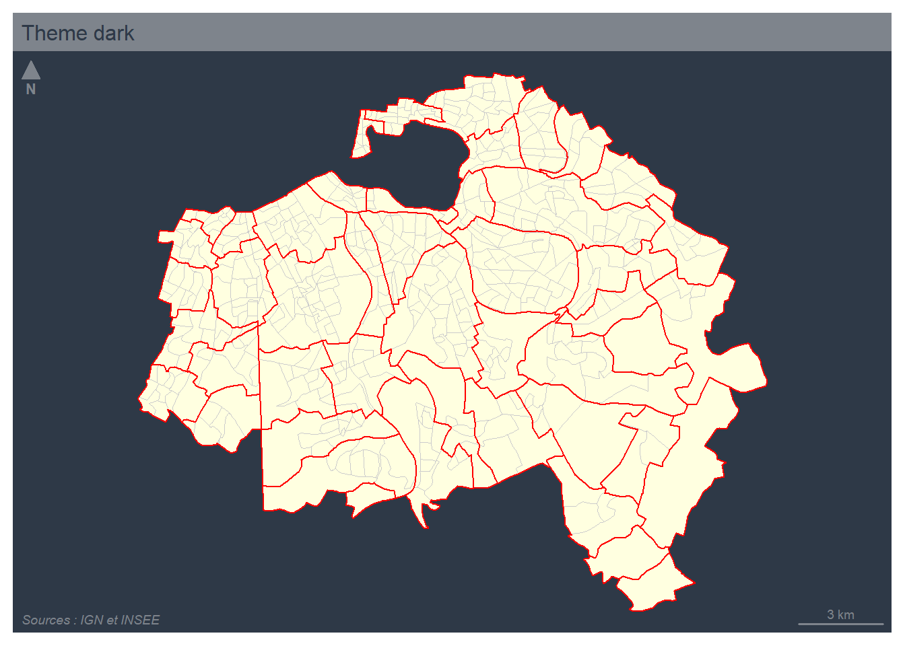
Autre exemple
#Choix du thème
mf_theme("agolalight")
mf_map(map_iris, type = "base",
col = "lightyellow", border="gray80",lwd=0.3)
mf_map(map_com, type = "base",
col = NA,border="red",lwd=1,
add = TRUE)
mf_layout(title = "Theme agolalight",
credits = "Sources : IGN et INSEE")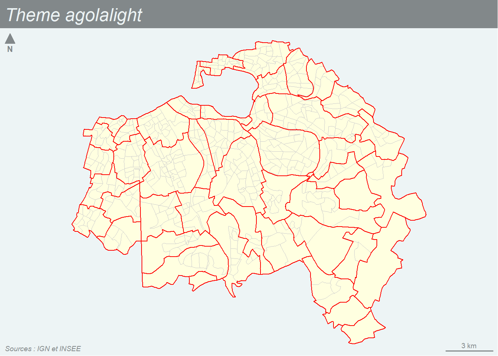
Ajout de texte
On peut ajouter une couche de texte avec la fonction mf_label(). Par exemple, on va ajouter à la carte précédente le nom des communes
mf_theme("agolalight")
# Trace les Iris avec des paramètres
mf_map(map_iris,
type = "base",
col = "lightyellow",
border="gray80",
lwd=0.3)
# Ajoute les contours des communes
mf_map(map_com,
type = "base",
col = NA,
border="red",
lwd=1,
add = TRUE)
# Ajoute les noms des communes
mf_label(map_com,
var="NOM_COM",
cex=0.4,
col="blue",
overlap = FALSE)
# Ajoute un cadre, un titre et des sources
mf_layout(title = "Communes et Iris du Val de Marne en 2017",
frame = TRUE,
credits = "Sources : IGN et INSEE")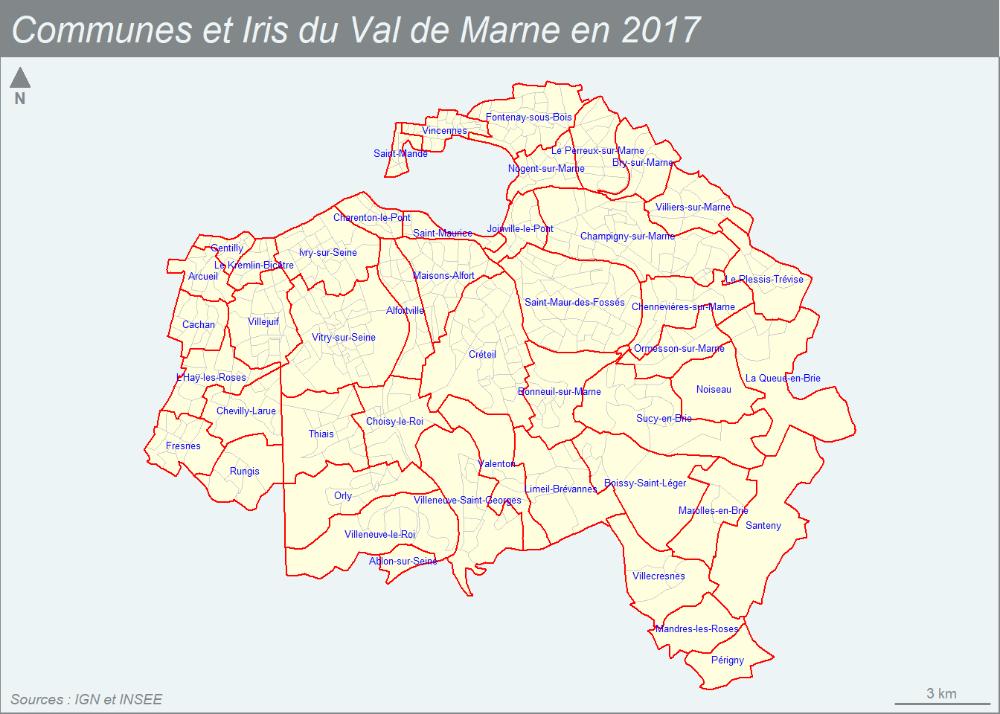
Carte de stock
Une carte de stock représente la localisation de quantités que l’on peut aditionner et dont le total a un sens. Par exemple un nombre d’habitants, un nombre de ménages, un nombre d’automobiles. Ce quantités doivent être représentées par des figures (cercles, carrés, …) dont la surface est proportionelle au stock afin que l’oeil du lecteur puisse les aditionner visuellement.
Dans le package mapsf, on réalise ce type de carte à l’aide de la fonction mf_map()en lui donnant le paramètre type="prop".
On va tenter à titre d’exemple de représenter la distribution du nombre de ménages ordinaires occupant un logement HLM par IRIS :
Carte de stock minimale
Les instructions minimales sont les suivantes :
# Trace les contours des communes
mf_map(x= map_iris,
type = "base")
# Ajoute le nombre de ménages par IRIS
mf_map(x =map_iris,
type ="prop",
var = "HLM1",
add=TRUE)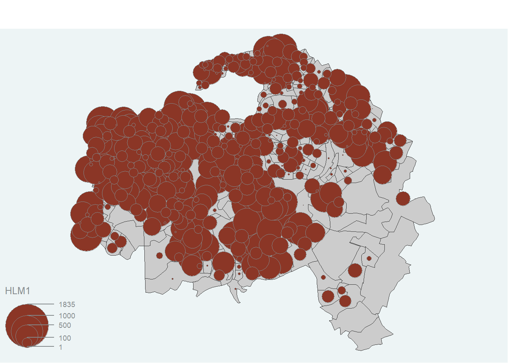
Mais le résultat est peu satisfaisant car les cercles sont trop grands. Il faut en pratique toujours effectuer un réglage de ceux-ci avec l’instruction inches=
Carte de stock habillée
mf_theme("agolalight")
mf_map(map_iris, type = "base",
col = "lightyellow",border="gray80", lwd=0.3)
mf_map(map_com, type = "base",
col = NA,border="black",lwd=1,add = TRUE)
mf_map(map_iris, var = "HLM1",type = "prop",
inches = 0.1, col = "red",leg_pos = "left",
leg_title = "Nombre de ménages", add=TRUE)
mf_layout(title = "Distribution des logements HLM en 2017",
frame = TRUE,
credits = "Sources : IGN et INSEE")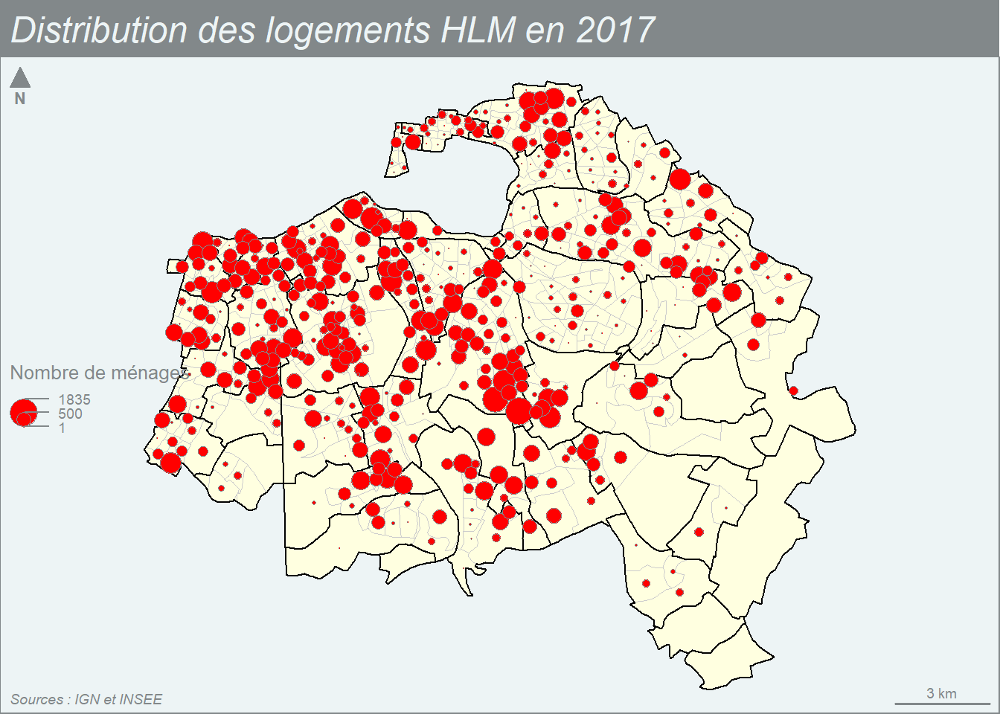
Carte choroplèthe
Une carte choroplèthe ou d’intensité représente un phénomène relatif dont la somme n’a pas de sens. Par exemple, il serait absurde d’aditionner les % de logement HLM des IRIS du Val de Marne. Ces variables d’intensité caractèrisent donc l’état général d’une zone (choros) et elles vont être représentées par une couleur appliquée à toute la surface de la zone, d’où leur nom de cartes choroplèthes.
La fonction du package mapsf adaptée aux variables d’intensité est la fonction mf_map()munie du paramètre type = "choro".
On va prendre l’exemple du nombre de voitures par ménage.
Carte choroplèthe minimale
Si on ne précise rien, la carte est réalisée à l’aide de la palette par défaut avec un découpage des classes en quantiles (effectifs égaux).
# Carte choroplèthe
mf_map(
x = map_iris,
var = "HLMpct",
type = "choro")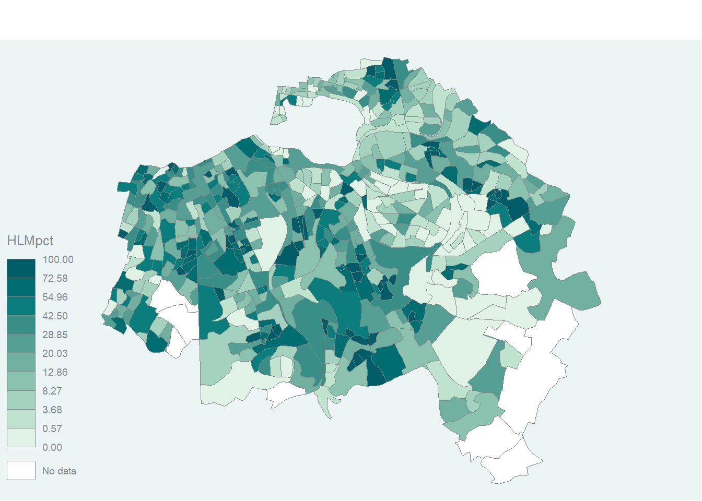
Carte choroplèthe habillée
On peut arriver à une carte beaucoup plus satisfaisante en contrôlant l’ensemble des paramètres de couleur et de découpage des classes. Puis en superposant les contours de communes au dessus de la carte des IRIS pour faciliter le repérage.
# Choisir les classes et la palette
mybreaks = c(0, 10,20,30,40,50,60,70,80,90, 100)
mypal <- mf_get_pal(n = c(5, 5), pal = c("Greens", "Reds"))
# Tracer la carte choroplèthe
mf_map( map_iris, var = "HLMpct",type = "choro",
breaks = mybreaks,pal = mypal,
border="white",col_na = "gray80",
leg_title = "% logements HLM",
leg_val_rnd = 0)
# Ajouter les contours des communes
mf_map(map_com, type = "base", col = NA,
border="black",lwd=1,add = TRUE)
# Ajouter un cadre, un titre et des sources
mf_layout(title = "% de ménages en HLM au RP 2017",
frame = TRUE,
credits = "Sources : IGN et INSEE")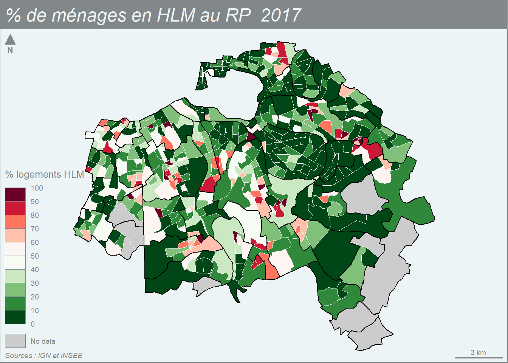
Carte stock + choroplèthe
Superposition
On peut combiner les deux modes cartographiques par superposition :
mf_theme("agolalight")
# Choisit les classes
mybreaks = c(0,5,10,20,40,80,100)
# Trace la carte choroplèthe
mf_map(
x = map_iris,
var = "HLMpct",
breaks = mybreaks,
# pal=mypal,
type = "choro",
border="white",
col_na = "gray80",
lwd=0.3,
leg_title = "% ménages",
leg_val_rnd = 0,
)
# Ajoute les cercles proportionnels
mf_map(
x =map_iris,
var = "HLM1",
type = "prop",
inches = 0.06,
col = "red",
leg_pos = "right",
leg_title = "Nb ménages",
add=TRUE
)
# Ajoute les contours des communes
mf_map(map_com,
type = "base",
col = NA,
border="black",
lwd=1,
add = TRUE)
# Ajoute un cadre, un titre et des sources
mf_layout(title = "Les ménages ordinaires en HLM 2017",
frame = TRUE,
credits = "Sources : IGN et INSEE")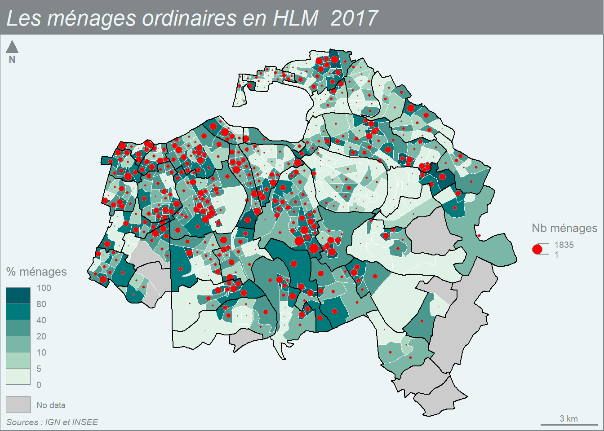
Combinaison
Mais on peut aussi utiliser le type prop_choro
mf_theme("agolalight")
mybreaks = c(0, 10,20,30,40,50,60,70,80,90, 100)
mypal <- mf_get_pal(n = c(5, 5), pal = c("Greens", "Reds"))
mf_map(map_iris, type = "base",
col = "gray80",border="white", lwd=0.3)
mf_map(map_com, type = "base",
col = NA,border="white",lwd=1,add = TRUE)
mf_prop_choro( x = map_iris, var = c("TOT", "HLMpct"),
inches = 0.08, col_na = "grey", pal=mypal,
breaks = mybreaks, nbreaks = 4, lwd = 0.1,
leg_pos = c("right", "left"),leg_val_rnd = c(0,0),
leg_title = c("nb. ménages", "% HLM"),
add = TRUE)
mf_layout(title = "Les ménages ordinaires en HLM dans le Val de Marne au RP 2017",
frame = TRUE, credits = "Sources : IGN et INSEE")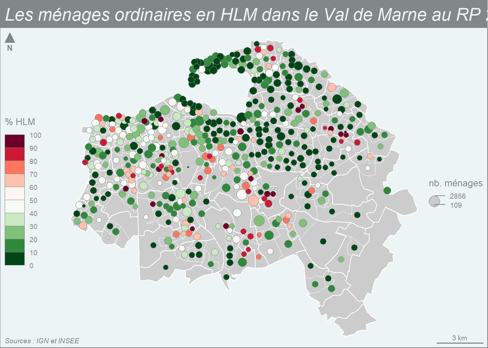